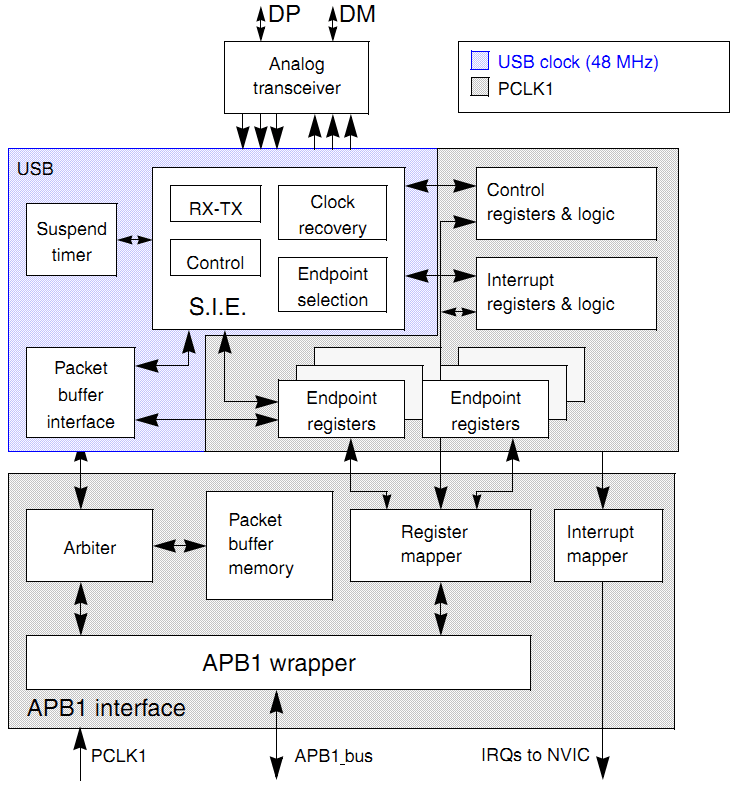

STM32F1的USB介绍¶
就目前接触到的Jlink、ST-Link都是用STM32F103C8来做USB适配器的， 所以gpJtag也打算用这个芯片。由于windows的驱动需要签名， 而自己开发的开源东西申请签名太麻烦了，所以就直接用libusb来做驱动层。
STM32F103C8包含一个USB2.0全速的PHY（12Mhz）， 使用内部PLL从主时钟生成48Mhz的设备时钟，所以也不需要额外的晶振。
这个是USB的框图 [1] :
USB的寄存器地址从 0x4000 5C00 开始，USB的专属SRAM从 0x4000 6000 开始， 512字节，可以配置成16个单向的端点或者8个双向的端点。
简单介绍一下主要的部分：
- SIE (Serial Interface Engine) 基本上可以算是USB的PHY， 包含信号的生成、编解码，
- Packet buffer Interface 用于共享缓冲区的控制。 顺便说一下USB的SRAM是双口RAM。
STM32的USB可以配置成双缓冲模式，这样可以提高传输速率。
Footnotes
| [1] | RM0008 - STM32F10xxx Reference Manual, page 598 |


This work is licensed under a Creative Commons Attribution-NonCommercial-NoDerivatives 4.0 International License. And license of code is under GNU General Public License Version 3.
本著作係採用創用 CC 姓名標示-非商業性-禁止改作 4.0 國際 授權條款授權. 涉及到的代码使用 GNU通用许可证 第三版 授权.